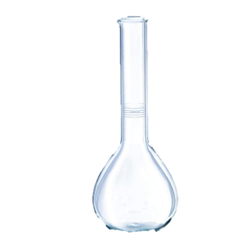
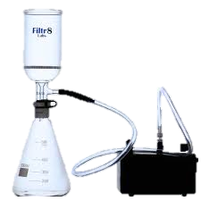

Step-by-Step Instructions
- 1. Add salicylic acid to the beaker.
- 2. Add acetic anhydride.
- 3. Add sulfuric acid as a catalyst.
- 4. Stir the mixture.
- 5. Heat the solution to start the reaction.
- 6. Use the Buchner funnel for filtration.
- 7. Use the water bath machine for controlled heating
- 8. Place the flask in an ice bath for crystallization.
- 9. Observe crystallization of aspirin.
Reaction Information
C₇H₆O₃ + C₄H₆O₃ → C₉H₈O₄ + CH₃COOH
Salicylic Acid + Acetic Anhydride → Aspirin + Acetic Acid